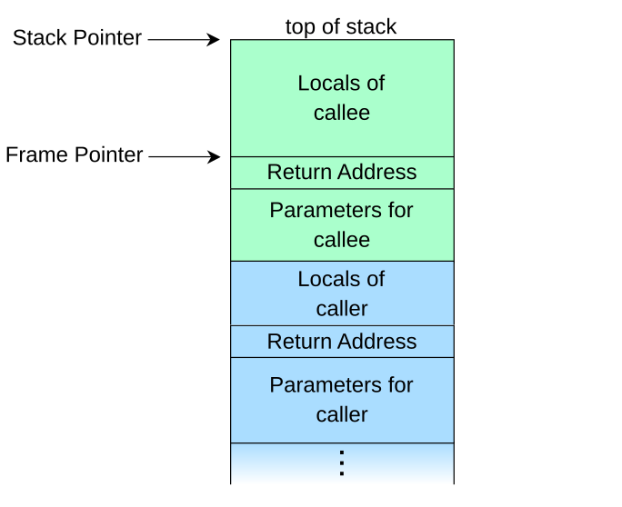

Context Sensitive Analysis
A method for handling methods. So far our static analyses have only looked inside one method. A method has one body but many callers, and when it returns, the instruction alone does not say where to go. This week we extend the analysis to method calls, and face the central trade-off: mixing all callers together is cheap but imprecise, while keeping them all apart is precise but explodes. The way out is to remember just a little of the call stack.
Why method calls are complicated
Static and dynamic jumps
"Come back when you are done", but back where?
A courier works for a whole office building. "Take this to the copy shop and come back" is easy to carry out, as long as you remember who sent you. Now imagine you are studying the copy shop and only see the courier leaving it. Where is the courier going? It depends on who sent them, and nothing at the copy shop tells you that.
- So far every jump we met went to a known location:
goto 7andifz eq 6name their target. These are statically known jumps. A jump whose target is only known at run time is a dynamic jump. - Method calls are among the most common sources of dynamic control flow. A static call names its callee, so the call itself is fine. The return is not: it continues wherever the caller was.
int id(int i) {
return i; // Where to return to?
}
int main() {
int x = id(1);
int y = id(0);
return x + y;
}- A static analysis that keeps one abstract state per offset (Week 5) has forgotten the call stack, so when it reaches
return:Iinidit does not know where to send the result. The control-flow graphs of Week 6 have no edge there either. - Dynamic dispatch makes it worse. At
o.m()the method that runs depends on the run-time class ofo, so we do not even know the call target.
Definition 9.1 Statically known and dynamic jumps
An instruction's jump is statically known if its possible next offsets are determined by the bytecode alone, and dynamic if they also depend on the run-time state.
The return rule of Week 3 shows where the dependency comes from: the next offset $\iota_2 + 1$ is taken from the caller's frame.
Proposition 9.2 A return is dynamic
The top frame does not determine the next offset of a return:I: there are reachable states with equal top frames but different successors.
Proof
Change the example above to x = id(1); y = id(1);. Its two calls are at main:1 and main:4. Each reaches id:1 with the same top frame $\langle [1], \epsilon(\mathtt{int}\ 1), \langle \mathit{id}, 1 \rangle \rangle$, but the first continues at main:2 and the second at main:5. ∎
"Look only at the top of the stack, and the same situation can go two ways. So an abstraction that throws away the rest of the stack must either remember the callers some other way, or give up on returns."
The trivial solution: in-lining
No calls, no problem
A cookbook says "make the sauce from page 12" in twenty recipes. You could instead copy the sauce steps into every recipe. Each recipe is now self-contained and you never have to flip pages. But the book gets thick, you redo the same reading twenty times, and a recipe that needs itself (a sourdough that needs sourdough) can never be written out in full.
The naive solution is to expand the body of the callee (the method being called) inside the caller, and then run normal abstract interpretation. No call is left, so no return is left:
int main() {
int i1 = 1; // id(1), in-lined
int x = i1;
int i2 = 0; // id(0), in-lined
int y = i2;
return x + y;
}- Why it is attractive: each copy is analysed in its exact situation, so nothing gets mixed. It is the preferred tool in optimising compilers, because a call can be specialised to the place it is called from. After copying the constants, this one becomes
return 1 + 0;. - Hard to do correctly: locals must be renamed, jumps moved and arguments passed, and with dynamic dispatch you do not know what to copy.
- No reuse: the same method is analysed again for every copy, and the code can grow exponentially with the depth of the calls.
- Worst of all, recursion: every copy of a recursive method contains another call to it, so in-lining never finishes.
Definition 9.3 In-lining a call
Replace invoke m at offset $\iota$ by the following, with fresh local indices starting at $b$: stores of the $a$ arguments into locals $b + a - 1, \ldots, b$; then the code of $m$, with every local index $i$ moved to $b + i$, jump targets moved along with the code, and every return replaced by a jump to the end of the copy, leaving the result on the operand stack. Jump targets in the rest of the caller are updated to the new offsets.
Proposition 9.4 In-lining preserves behaviour
If each return of $m$ leaves only the returned value on its operand stack, as compiled Java code does, the program with the call in-lined has the same outcome and the same return value as the original on every input.
Proof sketch
A simulation: relate a state of the original with frames $\mu\,\langle \lambda_c, \sigma_c, \iota \rangle\,\langle \lambda_m, \sigma_m, \iota_m \rangle$ to the single-frame state of the new program whose locals combine $\lambda_c$ and $\lambda_m$ (shifted by $b$), whose stack is $\sigma_c\,\sigma_m$, and whose offset is the copy of $\iota_m$. Every instruction of $m$ only touches $\sigma_m$ and its own locals, so each step corresponds to one step. Popping the arguments takes $a$ extra steps at entry, and the return leaves $\sigma_c\,v$, exactly as rule $\mathsf{return}_\mu$ does. ∎
Proposition 9.5 When in-lining ends, and how big it gets
Let the call tree of a method be the tree with one node per call chain starting at that method. Fully in-lining main terminates if and only if no cycle of the call graph is reachable from main. If it does, the result has one copy of a method per node of the call tree. If every method on levels $0, \ldots, d - 1$ makes $b$ calls to the next level, level $d$ is copied $b^d$ times.
Proof
Each round replaces every remaining call by one more level of the tree, so it ends exactly when the tree is finite. The tree is finitely branching, so by Kőnig's lemma it is infinite iff it has an infinite path. With finitely many methods, an infinite path must repeat a method, which gives a reachable cycle; conversely, going around a reachable cycle forever is an infinite path. On a regular tree, level $d$ has $b^d$ nodes. ∎
return 1 + 0; is in-lining plus copying constants into their uses, as the listing above shows.One copy of each method
Abstract call plumbing
Keep a guest book of everyone who called
A helpdesk has one notebook and a guest book. Everyone who calls writes their number in the guest book and tells the helpdesk what they know, which goes into the notebook. Whenever the helpdesk has an answer, it calls back everyone in the guest book. It works with any number of callers, and nobody ever goes unanswered.
- How does a real computer do it? A call stores a return address on the stack, and the return uses it as its target. In our JVM semantics the caller's frame plays that role.
- So keep track of a set of return addresses next to the abstract state. At a return, there is a set of targets, and the result is sent to each of them.
- The state becomes a map from offsets to a return set and an abstract state: $$\iota \mapsto \pset{\iota} \times \overline{\State}$$
- The return set needs no further abstraction: it is a subset of the finitely many call sites in the program, usually fewer than 100.
Step by step on our example (call sites are written method:offset, with bytecode offsets). After the first call:
int id(int i) {
// { main:1 } x {+}
return i;
// updates the result of main:1 with {+}
}
int main() {
int x = id(1); // result {+}
int y = id(0); // not computed yet
return x + y; // not computed yet
}And after the second call, which grows the same single state of id:
int id(int i) {
// { main:1, main:4 } x {0, +}
return i;
// updates the results of main:1 and main:4 with {0, +}
}
int main() {
int x = id(1); // result {0, +}
int y = id(0); // result {0, +}
return x + y; // result {0, +}
}It handles any number of callers and even recursion, with one copy of each method. But look at x: it was $\{+\}$ and is now $\{0, +\}$, although id(1) is plainly 1. The next topic is about that price.

Definition 9.6 The plumbing domain and its rules
Let $\overline{\State}$ be an abstraction of frames (locals and operand stack, as in Week 5). The domain is $X : \iota \to \pset{\iota} \times \overline{\State}$, ordered pointwise: $(R, s) \sqsubseteq (R', s')$ iff $R \subseteq R'$ and $s \sqsubseteq s'$. Initially, $X(\langle \mathit{main}, 0 \rangle) \sqsupseteq (\emptyset, s_0)$. An ordinary abstract step from $(R, s)$ to $\iota'$ with result $s'$ gives $X(\iota') \sqsupseteq (R, s')$. Calls and returns add:
"A call adds the call site to the callee's return set and joins the arguments into its first state. A return sends its value to every call site in the set, where it replaces the arguments on the caller's stack." Here $r$ is the offset of the call, and $r + 1$ is the return address. Within one method every offset has the same return set.
Theorem 9.7 Abstract call plumbing is sound
Let $X$ satisfy all the rules, with a sound step for ordinary instructions. For every reachable state with frames $f_1 \cdots f_n$ at offsets $\iota_1, \ldots, \iota_n$: the top frame $f_n$ is described by $X(\iota_n)$; each lower frame $f_j$, with the arguments of its call back on its stack, is described by $X(\iota_j)$; and $\iota_{j} \in R(\iota_{j+1})$ for all $j \lt n$.
Proof
Induction on the trace. Initially there is one frame, covered by $s_0$. Ordinary step: only $f_n$ changes, and the step rule covers it within the same method, whose return set is unchanged. Call: $f_n$ with its arguments is described by $X(\iota_n)$, so rule (call) covers the new frame and puts $\iota_n$ into the return set. $f_n$ itself stops being the top frame, and the invariant asks for exactly what we already know about it. Return of $v$: $v$ is described by the top of $X(\iota_n)$, and $\iota_{n-1} \in R(\iota_n)$, so rule (ret) with $r = \iota_{n-1}$ covers the caller's frame with its arguments replaced by $v$ at $r + 1$, which is the concrete successor. The return set moves along, so the frames below stay related. ∎
"If the fixed point says an error is unreachable, it is unreachable. A missing alarm is a guarantee. Only alarms can be false."
main:1 and main:4, not a count of the calls, so that they match the labs.The single-context nightmare
Every use of a method leaks into every other
Back at the helpdesk with one notebook. Alice calls and says "my number is 0", and Bob calls and says "my number is 1". The notebook now reads "the number is 0 or 1". The helpdesk calls Bob back: "your number may be 0". Bob, who knows nothing else, now fears a division by zero that can never happen. The helpdesk never mixed up its logic, only its callers.
Keeping a single instance of a method means that every use of it leaks into every other. Swap the arguments and divide:
int id(int i) {
// { main:1, main:4 } x {0, +}
return i;
// updates the results of main:1 and main:4 with {0, +}
}
int main() {
int x = id(0); // result {0, +}
int y = id(1); // result {0, +}
return x / y; // result {0, +} and divide by zero
}- The program computes $0 / 1$, but the analysis reports a possible division by zero: a false alarm.
- The analysis is not wrong about
id, which really is called with both 0 and 1. It has lost the connection between which call passed which value. We do not save the context of the call, so the result is too wide. - In path terms, the analysis also follows paths no run can take: enter
idfrom the call atmain:1, and leave it tomain:5, the return address of the other call. Such a path is invalid.
| Program | Real run | One shared copy says | Verdict |
|---|---|---|---|
| id(1) + id(0) | 1 | $\{0, +\}$ | sound, too wide |
| id(0) / id(1) | 0 | possible divide by zero | false alarm |
| id(1) / id(0) | divide by zero | possible divide by zero | true alarm |
Proposition 9.8 One copy joins all callers
Let $m$ have the reached call sites $r_1, \ldots, r_n$. At any solution of the rules of Definition 9.6, the entry state of $m$ is above the join of the arguments of all $r_i$, and with $v$ the join of all values returned by $m$, the result on the stack at each $r_i + 1$ is above $v$.
Proof
Rule (call) adds the arguments of each $r_i$ to the same $X(\langle m, 0 \rangle)$. Every $r_i$ is in the return set of $m$, and this set is shared by all offsets of $m$, so rule (ret) sends each returned value to each $r_i + 1$. ∎
Worked example. For $\mathit{id}$ with arguments $\alpha(\{0\})$ and $\alpha(\{1\})$, in signs: the entry is $\{0\} \sqcup \{+\} = \{0, +\}$, and both results are $\{0, +\}$. So no solution can give the second call's result the precise value $\{+\}$.
Definition 9.9 Valid paths
A path through the methods is a sequence of ordinary steps, call steps $\mathit{call}_r$ and return steps $\mathit{ret}_r$. It is valid if it follows the grammar $$V ::= \epsilon \mid \mathit{step}\ V \mid \mathit{call}_r\ V\ \mathit{ret}_r\ V \mid \mathit{call}_r\ V$$ so that every return goes to the call site of the call it matches, like matching parentheses (the last case is a call that has not returned yet).
Proposition 9.10 Real runs are valid, and one copy is not limited to them
Every trace follows a valid path. The rules of Definition 9.6 also propagate values along invalid paths, for example $\mathit{call}_{\mathtt{main:1}}\ \mathit{ret}_{\mathtt{main:4}}$.
Proof
In a trace, rule $\mathsf{return}_\mu$ continues in the frame pushed by the matching call, so calls and returns nest. For the second part, once both call sites are in the return set of $\mathit{id}$, rule (ret) does not ask which call a value entered through. ∎
x = id(1); y = id(0); return x / y; and say the bug "can never happen". But that program really computes $1 / 0$: the alarm is true. The false alarm needs the arguments swapped, as above. The lab has both versions.Context sensitivity
Full call-stack context
One notebook per chain of callers
Give the helpdesk a separate notebook for every caller, labelled with the whole chain of who asked whom: "Alice asked Dave, who asked us". Now nothing gets mixed: Alice's number stays in Alice's notebook, and the callback goes to the right person without needing a guest book, because the label already says who it is.
Context sensitive analysis expands the abstract state so that it can react to the context in which a method was called. The most direct way: make the state of an instruction depend on the whole call stack. The key is now a stack of offsets, ending in the current one:
The two calls have different call stacks, so they get separate states, and the false alarm disappears:
int main() {
int x = id(0); // main:1 -> {} x {0}
int y = id(1); // main:4 -> {} x {+}
return x / y; // main:8 -> {} x {0}
}
int id(int x) {
// Now we keep two states:
// main:1,id:1 -> {main:1} x {0}
// main:4,id:1 -> {main:4} x {+}
return x;
}- Each result goes back to its own caller, so the analysis only follows valid paths, and the divisor stays $\{+\}$.
- Notice that each return set has one element: with the full stack as the key, the set is really redundant, since the key already says where to return. It becomes necessary again when we cut the stack short in topic 07.
- A nice side effect: a real bug is now reported together with the call that causes it, not just "somewhere in this method".
Definition 9.11 Call-stack contexts
A key is a non-empty stack $w\,\iota \in \iota^{+}$ of call sites $w$ followed by the current offset $\iota$. The domain is $X : \iota^{+} \to \pset{\iota^{*}} \times \overline{\State}$. An ordinary step from $w\,\iota$ to $\iota'$ updates $X(w\,\iota')$, and:
"A call extends the key by one offset. A return shortens the key by one and moves the caller past the call."
Proposition 9.12 Return sets are singletons
At the least solution, a key $w\,r\,\iota$ has return set $\{w\,r\}$, and a key of main without call sites has $\emptyset$.
Proof
Only rule (call$^{+}$) adds to a return set. It creates the first key $w\,r\,\langle m, 0 \rangle$ of a method instance with the set $\{w\,r\}$, and ordinary steps and (ret$^{+}$) only copy the set between keys with the same prefix $w\,r$, so nothing else is ever added. ∎
Theorem 9.13 Sound, and only valid paths
Let $\pi(\mu)$ be the stack of offsets of a call stack $\mu$. If $X$ satisfies the rules, then for each reachable state the top frame is described by $X(\pi(\mu))$. Moreover, each value at a key is derived along a valid path whose unreturned calls are exactly the call sites in the key.
Proof sketch
Soundness is the induction of Theorem 9.7, now with the key following the concrete stack exactly: a call pushes one offset, an ordinary step changes the last one, and a return pops one and adds one to the caller's. For the second part, induct on the derivation: (call$^{+}$) opens a call and records it in the key, and (ret$^{+}$) can only close the most recently opened call, because it takes the caller's frame from the key's own prefix. ∎
What the full stack costs
Too many notebooks, and sometimes no end of them
One notebook per chain of callers sounds fine until the chains multiply: if everyone asks two colleagues, who each ask two more, the number of chains doubles at every level. It is worse when someone can ask themselves: "ask yourself the same question with a smaller number" gives ever longer chains, and if nobody knows how small the number starts, the notebooks never end.
- Space. There is one version of the state for each reachable call stack, and the number of stacks can quickly explode: a call tree that doubles at each level has $2^d$ stacks at depth $d$, even if the program text is tiny.
- Recursion. In a recursive method the call stack often depends on the input, and may be unbounded. Each new depth is a new key, so the analysis can run forever. Widening does not help, because it is the set of keys that grows, and not a value.
- This does not always happen. With
factorial(3)the known value bounds the recursion: three nested calls, and the analysis computes exactly 6. Withfactorial(n)and unknownn, there is no end.
int factorial(int n) {
if (n <= 1) return 1;
return n * factorial(n - 1);
}Proposition 9.14 Exponentially many contexts
In a program whose call graph has no cycles, the reachable keys at the start of a method $m$ number at most the call-graph paths from main to $m$, counted per call site. If each of $d$ levels calls the next from $b$ call sites, the bottom level has $b^d$ contexts. For the doubling call tree of the lab, there are $2^{d+1}$ method copies in total, including main.
Proof
Keys are created only by (call$^{+}$), which extends a key by one call site, so a key is a path in the call graph. In the regular case there are $b$ choices at each of $d$ levels. The lab's count: main, one copy of $f_0$, and $2^j$ copies of $f_j$ for $1 \leq j \leq d$, so $1 + 1 + (2^{d+1} - 2) = 2^{d+1}$. ∎
Proposition 9.15 No finite fixed point under recursion
If concrete runs of a program reach call stacks of every depth, then every solution of the rules of Definition 9.11 has infinitely many keys, so an analysis that stores one state per key cannot reach a fixed point. factorial(n), with $n$ unknown and over the mathematical integers, is such a program.
Proof
By Theorem 9.13 every reachable call stack has its own key. Stacks of different depths are different keys. For factorial(n), the input $n = d + 1$ reaches depth $d$ inside the recursion. ∎
Limited context sensitivity: $k$-CFA
Remember only the last few callers
Label each notebook only with the last person who asked, or the last two. There can only be so many such labels, however long the real chains get, so the notebooks stop multiplying and recursion stops being a problem. The price: two chains that end the same way share a notebook, and so can mix again.
- Instead of the entire call stack, keep only the last $k$ call sites: this is $k$-CFA ($k$-limited control-flow analysis), or $k$-call-site sensitivity. A key is then at most $k + 1$ offsets: $k$ call sites and the current offset.
- $k = 0$ is abstract call plumbing: one copy of each method. As $k$ grows towards the depth of the stacks, we get the full-stack analysis. So the two extremes are the ends of one family.
- The return set matters again. Dropping the old part of the stack merges callers, so one key can have several places to return to.
A wrapper shows exactly what can still go wrong:
int id(int i) { return i; }
int wrap(int i) { return id(i); }
int main() {
int x = wrap(0);
int y = wrap(1);
return x / y;
}| $k$ | Copies of wrap | Copies of id | Result |
|---|---|---|---|
| 0 | one: ε | one: ε | false alarm |
| 1 | main:1 and main:4 | one: wrap:1 | false alarm: the calls mix inside id |
| 2 | main:1 and main:4 | main:1 → wrap:1 and main:4 → wrap:1 | no alarm |
- At $k = 1$, the return set of
idhas two elements,main:1 → wrap:1andmain:4 → wrap:1: exactly the merge that the set exists to handle. - With recursion the set of keys is finite at every finite $k$, so the problem of topic 06 is gone. The values can still keep growing, which is what widening from Week 6 is for.
Definition 9.16 $k$-CFA
Truncate a stack to its last $k + 1$ offsets: $$\mathit{trunc}_k(\iota_1 \cdots \iota_n) = \iota_{\max(1,\, n - k)} \cdots \iota_n.$$ Keys are truncated stacks. An ordinary step from $w\,\iota$ updates $X(w\,\iota')$, and the rules become:
"A call keeps only the last $k$ call sites in the callee's key, and notes the caller's full key in the return set. A return goes to every key in the set."
Proposition 9.17 The two ends, and why return sets come back
$k = 0$ gives exactly the rules of Definition 9.6. If $k$ is at least the depth of every reachable stack, $\mathit{trunc}_k$ changes nothing and we get Definition 9.11. In between, a return set can have several elements: for the program above with $k = 1$, the key $\mathtt{wrap{:}1}\ \langle \mathit{id}, 0 \rangle$ has the return set $\{\mathtt{main{:}1}\ \mathtt{wrap{:}1},\ \mathtt{main{:}4}\ \mathtt{wrap{:}1}\}$.
Theorem 9.18 Sound, with finitely many keys
If $X$ satisfies the rules, each reachable state's top frame is described by $X(\mathit{trunc}_k(\pi(\mu)))$. With $|\iota|$ offsets and $|C|$ call sites, there are at most $|\iota| \cdot \sum_{j = 0}^{k} |C|^{j}$ keys, so with a value domain of finite height, or with widening, the analysis terminates, even on recursive programs.
Proof
The induction of Theorem 9.7, with the invariant that for adjacent frames the truncated key of the caller is in the return set of the truncated key of the callee: rule (call$^{k}$) puts it there, and rule (ret$^{k}$) then covers the concrete successor. For the count, a key is at most $k$ call sites and one offset. ∎
Proposition 9.19 More context is never less precise
For $k \leq k'$ and monotone rules, $\mathit{lfp}\,F_{k}$ over-approximates $\mathit{lfp}\,F_{k'}$: for each key $w$ of the $k$-analysis, $X_{k}(w) \sqsupseteq \bigsqcup \{ X_{k'}(w') \mid \mathit{trunc}_k(w') = w \}$ in its abstract state.
Proof sketch
The map $\alpha(X')(w) = \bigsqcup \{ X'(w') \mid \mathit{trunc}_k(w') = w \}$ is an abstraction from the $k'$-domain to the $k$-domain, and each rule of $F_k$ over-approximates the rule of $F_{k'}$ through it. The fixed-point transfer of Week 6 gives the claim. This is about least fixed points: widening depends on the order of updates, and can in principle break the comparison. ∎
Proposition 9.20 Each wrapper costs one more $k$
Let main call a chain of $d$ wrappers around id from two call sites, with different arguments. Then $k$-CFA keeps the two values apart at id if and only if $k \geq d + 1$.
Proof
Each path from main to id has $d + 1$ call sites, and the two paths differ only in the first one, in main. The key of id keeps the last $k$ of them, so it differs iff the first is included, i.e. iff $k \geq d + 1$. If the keys are equal, Proposition 9.8 applies to the shared copy; otherwise each copy holds one value, and all callers along the way have separate keys too. ∎
"No fixed $k$ is enough for every program, but each program with bounded wrappers has some $k$ that is." The lab confirms $k = 1, 2, 3$ for $d = 0, 1, 2$.
How much context?
Enough to separate the callers that matter
How much of a conversation do you need to remember to answer the next question? Usually just the last sentence, sometimes the one before it, and rarely the whole conversation. Remembering more always costs effort, and it pays off only if it changes your answer. And no amount of memory helps if you cannot express the answer in the first place.
- In Java, $k = 1$ is often both fine and necessary for a good analysis: one shared copy is too imprecise, and the last call site separates most callers. $k = 2$ is often still feasible.
- Complexity. For object-oriented languages, $k$-CFA is polynomial for every fixed $k$, though the degree grows with $k$. For functional languages it is EXPTIME-complete when $k \geq 1$, so no polynomial algorithm exists. This is the "$k$-CFA paradox" (Might, Smaragdakis and Van Horn, 2010): the same-looking algorithm has very different costs, because closures capture variables from several different contexts, while objects are built by copying values into fields.
- Context does not fix the domain. In
if (n != 0) return inv(n);there is only one call, so every $k$ gives the same result. The false alarm comes from intervals, which cannot say "everything except 0". Reach for a better abstraction there (Week 6). - Be selective. Introspective analysis (Smaragdakis, Kastrinis and Balatsouras, 2014) runs a cheap analysis first and uses its results to decide where a deep context is worth the cost. A few methods cause most of the blow-up.
- Other kinds of context. Call sites are not the only choice. For object-oriented code, object sensitivity (Milanova, Rountev and Ryder, 2002) uses the receiver object's allocation site. The functional approach (Sharir and Pnueli, 1981) keys on the abstract arguments, reusing a result whenever a method is called with the same input.
- For JPAMB. A false alarm does not make a sound analysis wrong, but it stops you from wagering on "no". The "no" answers you do get stay reliable whichever $k$ you pick, so raise $k$ only if the extra precision turns "maybe" into a confident "no" within your time limit.
Theorem 9.21 Van Horn and Mairson (2008)
For a functional language, deciding $k$-CFA is EXPTIME-complete for every $k \geq 1$. ($0$-CFA is polynomial.)
Theorem 9.22 Might, Smaragdakis and Van Horn (2010)
For an object-oriented language, $k$-CFA runs in polynomial time for every fixed $k$.
"EXPTIME-complete" is a stronger statement than it may look: by the time hierarchy theorem P $\neq$ EXPTIME, so no polynomial-time algorithm exists. For NP-complete problems (Week 8) that separation from P is unproven.
For our static calls the polynomial bound is direct: Theorem 9.18 gives at most $K = |\iota| \cdot \sum_{j \leq k} |C|^{j}$ keys. If the states have $v$ variables, each from a domain of height $h$, each key changes at most $v \cdot h$ times, and return sets add at most $K$ more changes per key, so the number of worklist visits is polynomial in the size of the program for each fixed $k$, with a degree that grows with $k$.
Proposition 9.23 When context cannot help
If every method of a program has only one reachable call stack, then the analysis gives the same result for every $k$.
Proof
Each method then has exactly one key at every $k$, because truncating a single stack gives a single result. The key sets correspond one-to-one, and the rules propagate the same values between corresponding keys. ∎
Cheat sheet
Definitions and results worth memorising
Dynamic jump
The target comes from the caller's frame, not from the instruction.
In-lining
Precise, no reuse, explodes, and cannot handle recursion.
Abstract call plumbing
One copy per method with a set of return addresses. Sound, finite.
The leak
All callers mix, so invalid paths are followed and false alarms appear.
Valid path
Returns match calls, like parentheses.
Full stack
Return sets are singletons. Only valid paths. $b^d$ contexts, and no fixed point under unbounded recursion.
$k$-CFA
$k = 0$ is plumbing; large $k$ is the full stack. Return sets are needed again.
Size
Finite, so recursion is fine. Widening still handles growing values.
Precision
More context never hurts at least fixed points. $d$ wrappers need $k \geq d + 1$.
Complexity
The $k$-CFA paradox. In Java, $k = 1$ is the usual choice.
| caller, callee | the two sides | the method making a call, and the method being called |
| $R \subseteq \iota$ | return set | the call sites a return may go back to; the address is $r + 1$ |
| $\overline{\State}$ | abstract state | an abstraction of frames, e.g. signs or intervals per variable |
| context | extra key | what separates the copies of a method's state |
| $w\,\iota$ | stack key | call sites $w$ followed by the current offset $\iota$ |
| $\pi(\mu)$ | stack of offsets | the program counters of all frames of a call stack $\mu$ |
| $\mathit{trunc}_k$ | truncation | keep the last $k$ call sites and the current offset |
| invalid path | unreal path | a path whose returns do not match its calls |
| CFA | control-flow analysis | in $k$-CFA, $k$ is the number of call sites kept |
Exam questions
The lecture's "until next time" questions, with model answers
Why are method calls complicated?
Because returning from a method is a dynamic jump. A goto or a branch names its target, and a static call names its callee, but a return continues wherever the caller was, and that is only known from the call stack at run time (Proposition 9.2). A static analysis that keeps one abstract state per offset has forgotten the call stack, so at a return it does not know where to send the result. Dynamic dispatch makes it worse, because then even the call target is not known statically.
The simple remedies have clear problems. In-lining removes the calls, but the code can grow exponentially, the analysis is not reused, it can be hard to do correctly, and it never finishes on recursive methods. Abstract call plumbing, which keeps a set of return addresses next to one shared state per method, is sound and handles recursion, but mixes all callers: values from one call leak into the results of another, which gives false alarms.
Why would you use context sensitive analysis?
For precision. Without context, each method has one state, so the arguments of all callers are joined and the joined result goes back to all of them (Proposition 9.8). In x = id(0); y = id(1); return x / y; that makes y $\{0, +\}$, and the analysis reports a division by zero that cannot happen. The analysis also follows invalid paths, which enter a method from one call and leave it to another.
Context sensitivity adds the context of the call, usually call sites, to the key of the abstract state. Different calls then get separate states, each result goes back to its own caller, and the false alarm disappears: y stays $\{+\}$. Branches that are dead in one context are also recognised as dead there. As a bonus, a real error is reported together with the calling context that causes it. In JPAMB, a false alarm stops you from wagering on "no", and every alarm removed gives a sound analysis one more reliable "no", which improves the score.
What is the drawback of a context sensitive analysis?
Cost, and in the extreme, termination. There is one version of the state per context. With the full call stack the number of contexts can be exponential in the call depth ($b^d$ for $b$ call sites per level, Proposition 9.14). With recursion, the stacks can be unbounded, so the analysis may never reach a fixed point (Proposition 9.15).
$k$-CFA limits the context to the last $k$ call sites, which gives finitely many keys. But now the precision depends on $k$: each wrapper method between the interesting call and the value use needs one more $k$ (Proposition 9.20), and the state count still grows quickly, about $|C|^k$ in the worst case. For object-oriented languages $k$-CFA is polynomial for fixed $k$, but for functional languages it is EXPTIME-complete for $k \geq 1$. In Java, $k = 1$ is usually a good compromise, with $k = 2$ often still feasible. And context cannot help when the problem is the value domain itself: intervals cannot express $x \neq 0$ at any $k$.
Based on the course notes "Context Sensitive Analysis" of 02242 Program Analysis by Christian Gram Kalhauge, DTU Compute, which cite Might, Smaragdakis and Van Horn (2010) Resolving and exploiting the k-CFA paradox and Smaragdakis, Kastrinis and Balatsouras (2014) Introspective analysis. Further references: Sharir and Pnueli (1981) on interprocedural dataflow analysis; Shivers (1991) Control-flow analysis of higher-order languages; Milanova, Rountev and Ryder (2002) on object sensitivity; Van Horn and Mairson (2008) Deciding kCFA is complete for EXPTIME. Call stack figure by R. S. Shaw (modified), public domain, via Wikimedia Commons. The labs compute with intervals (Week 6), and signs are only read off the intervals for display. Unofficial study aid.